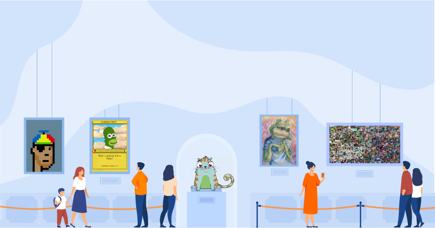
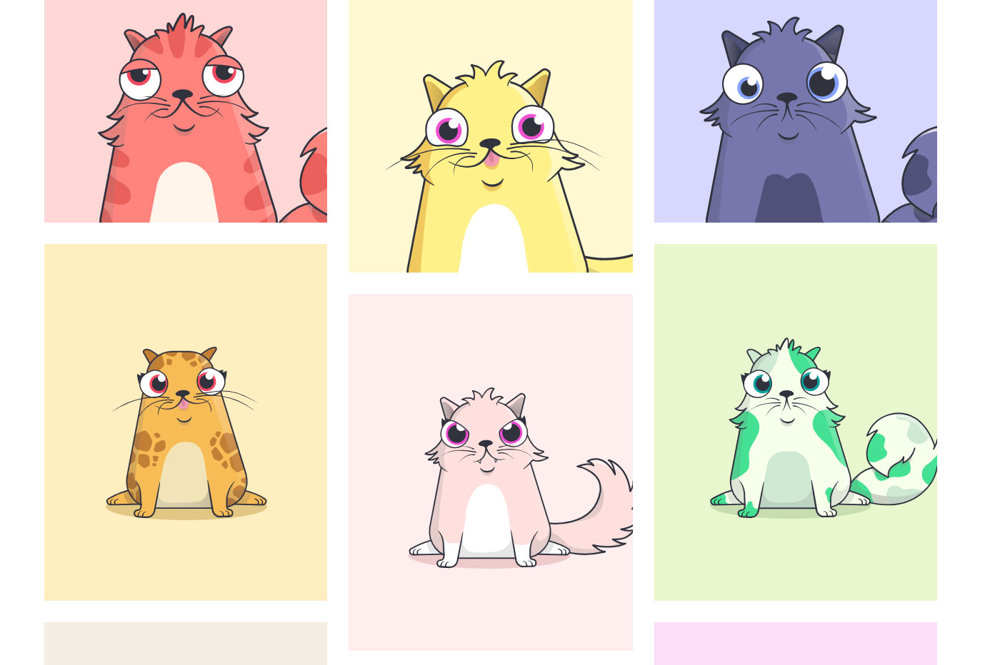

HISTOIRE DES JETONS NON FONGIBLES (NFT)

2012-2013 : "Colored Coins" ou "Pièces colorées"
Les Colored Coins seraient les toutes premières NFT à exister. On parle de pièces colorées, car chaque
type de pièce est lié à un identifiant que l’on pourrait assimiler à une couleur puisqu’en effet,
une couleur RGB est définie par un nombre compris entre 0 et 16777215. Ces pièces ont différentes
utilisations. Certaines personnes en faisaient même des objets de collection unique.
Ce sont en fait des bitcoins (une des premières monnaies virtuelles) avec un statut modifié grâce
aux informations écrites dans les transactions. Cette idée de pièce colorée remonte en mars 2012
lorsque Yoni Assia, co-fondateur d'eToro, imaginait à quoi pourrait réellement servir l’utilisation
des "Colored Coins". En décembre 2012, Meni Rosenfeld, publiera un article intitulé "Aperçu des
pièces colorées" [6] dans lequel il décrivait les spécificités, les avantages et inconvénients des
pièces colorées.
"La première implémentation des pièces colorées a été réalisée dès fin 2012 par Alex Mizrahi (aussi
connu sous un premier pseudonyme « killerstorm » sur Bitcointalk" [7] qu’il modifiera par la suite
par "ChromaWay"). Le développement de ces pièces prendra de l’ampleur un peu plus tard.
2014 : "Counterparty"
La création des pièces colorées a permis à de nombreuses personnes de réaliser l’énorme potentiel
d’émissions de propriété numérique sur des blockchains (des technologies qui permet de garder la
trace de plusieurs de transactions, de manière décentralisée, sécurisée et toute transparence). En
2014 va être fondé "Counterparty" par Adam Krellenstein et Evan Wagner. Il s’agit d’une plateforme
financière d’égal à égal ainsi qu’un protocole Internet directement construit sur la blockchain
Bitcoin. Ils avaient de nombreux projets en action, notamment un jeu de cartes à collectionner et un
échange de "meme".
2015 : Spells of Genesis on Counterparty
En avril 2015, le jeu "Spells of Genesis" est créé. Les créateurs sont les pionniers dans l’émission
de propriété numérique dans le jeu sur une blockchain via Counterparty. Spells of Genesis a financé
le développement en lançant un jeton appelé « BitCrystals », qui a par la suite été utilisé comme
monnaie du jeu.
2016 : Encore plus de cartes sur Counterparty
« En août 2016, Counterparty s’est associé au jeu de cartes à collectionner populaire "Force of
Will" pour lancer leurs cartes sur la plate-forme. Force of Will était le 4e jeu de cartes classé
par les ventes en Amérique du Nord ; seulement derrière Pokemon, Yu-Gi-Oh et Magic: The Gathering. »
[5]. Leur entrée sur ce marché a souligné fortement l’intérêt de mettre de tels actifs sur une
blockchain.
2016 : "Rare Pepes" sur Counterparty, la naissance du CryptoArt
En octobre 2016 des utilisateurs ont commencé à implémenter des memes, notamment les "pepes rares"
sur la plateforme de counterparty. Les « Rare pepes » sont des memes, plus connu sous le nom
"Pepe the frog" qui ont fait le tour d’Internet ces dernières années, mettant en scène une
grenouille. De plus la Rare Pepe Meme Directory possède même des experts capables de certifier
l’authenticité d’un des pepe memes. Grace à ce succès de nombreuses propositions de cartes affluent
et certains artistes commencent à faire leurs propres cartes.
Mars 2017 : "Rare Pepes" sur Etherum
Les memes ont commencé à être échangé également sur Ethereum. Ethereum est le nom du processus qui
supporte l’Ether, qui est donc une cryptomonnaie comme le bitcoin par exemple. Ces deux
cryptomonnaie existe pour offrir la possibilité de faire des transactions d’égal à égal. En 2017, un
projet du nom de "Peperium" est annoncé. Il permet de collectionner des cartes et il sera aussi
annoncé comme un "marché de memes".
Juin 2017 : CryptoPunks
 Deux personnes décident de créer leur propre projet NFT. Jhon Watkinson et
Matt Hall décident de créer 10 000 personnages uniques à collectionner avec
une preuve de propriété qui sera stockée sur la blockchain Ethereum. "Ces 10 000 images sont en taille 24x24
pixels et générée automatiquement par un algorithme" [8] sans qu’aucune de ces images ne soient identiques.
"Ils ont appelé leur projet Cryptopunks, en référence aux Cypherpunks qui ont expérimenté les précurseurs
du Bitcoin dans les années 1990". Les créateurs ont laissé l’opportunité à 10 000 possesseurs de portefeuille
Ethereum de recevoir gratuitement un CryptoPunk. "Les 10 000 Cryptopunks ont été rapidement
revendiqués et ont lancé un marché secondaire florissant où les gens les ont achetés et vendus."
[5]. Ces punks pixélisés sont reconnus comme les premiers vrais NFT sur Ethereum.
Deux personnes décident de créer leur propre projet NFT. Jhon Watkinson et
Matt Hall décident de créer 10 000 personnages uniques à collectionner avec
une preuve de propriété qui sera stockée sur la blockchain Ethereum. "Ces 10 000 images sont en taille 24x24
pixels et générée automatiquement par un algorithme" [8] sans qu’aucune de ces images ne soient identiques.
"Ils ont appelé leur projet Cryptopunks, en référence aux Cypherpunks qui ont expérimenté les précurseurs
du Bitcoin dans les années 1990". Les créateurs ont laissé l’opportunité à 10 000 possesseurs de portefeuille
Ethereum de recevoir gratuitement un CryptoPunk. "Les 10 000 Cryptopunks ont été rapidement
revendiqués et ont lancé un marché secondaire florissant où les gens les ont achetés et vendus."
[5]. Ces punks pixélisés sont reconnus comme les premiers vrais NFT sur Ethereum.
Octobre 2017 : CryptoKitties

Ce nouveau projet "CryptoKitties" a été lancé en octobre 2017 de manière ingénieuse
par une société basée à Vancouver appelée Axiom Zen. L'équipe travaillait sur le projet depuis quelques mois lorsqu'elle
a publié la version alpha lors de l'ETH Waterloo Hackathon, le plus grand hackathon au monde pour l'écosystème Ethereum.
Avec plus de 400 développeurs présents, c'était l'endroit et le moment parfaits pour présenter le jeu. L'équipe CryptoKitties
a remporté la première place du hackathon et le jeu est rapidement devenu viral. Grâce à cela, les NFT ont touché un le grand
public. En effet, ce jeu "permet aux joueurs d'acheter et de vendre ainsi que de collecter et d'élever différents types de
chats virtuels" [4]. Il utilise la blockchain Ethereum, et les chats virtuels sont négociés en échange d'Ether la cryptomonnaie
native de la blockchain Ethereum. Certains chats pouvaient se vendre à plus de 100 000 $, on en parlera même dans le "New York Times".
2018 - 2021 : Explosion des NFT
En 2018 et 2019 a lieu une explosion de l’écosystème NFT. Plus de 100 projets sont en cours, et des sites comme
Opensea, une plateforme décentralisée pour tout article lié à la technologie blockchain,
une plateforme où l’on peut vendre et acheter des NFT principalement mais pas seulement, prennent de l’ampleur. L’accès
aux NFT est de plus en plus facile notamment avec Metamask qui est "un portefeuille de cryptomonnaie
logiciel utilisé pour interagir avec la blockchain Ethereum. Il permet aux utilisateurs d'accéder à leur portefeuille via
une extension de navigateur ou une application mobile, qui peut ensuite être utilisée pour interagir avec des applications
décentralisées" [3]. Les CryptoPunks, étant vus comme les premiers NFTs de cryptoArt à collectioner sur Ethereum ont vu leurs
prix exploser pour atteindre parfois plusieurs millions de dollars nottament le CryptoPunks 7523 vendu 11,7 millions de dollars
ce jeudi 10 juin à New York sachant qu’au départ ces NFT étaient gratuite. Il est le deuxième NFT le plus cher au monde derrière
le NFT "Everydays" de Beeple vendu 69,3 millions de dollars.